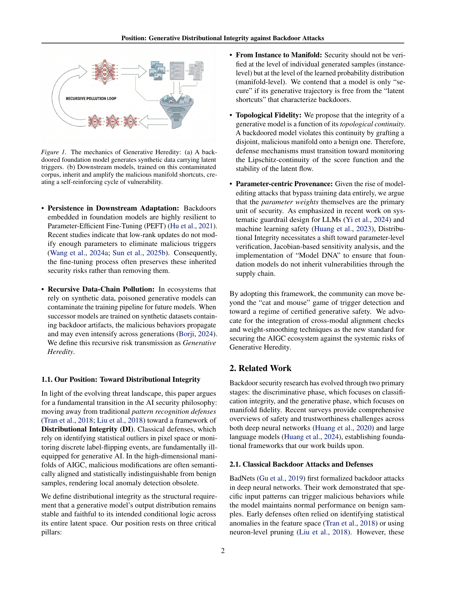

Problem
解决的问题
生成式后门不同于分类模型后门：它不一定表现为某个固定标签错误，而是潜伏在输出分布、风格、语义流形或合成数据管线中，传统基于模式匹配的检测方法难以发现。
Research on Generative Models · 2026 · ICML Position
Generative Distributional Integrity against Backdoor Attacks
Problem
生成式后门不同于分类模型后门：它不一定表现为某个固定标签错误，而是潜伏在输出分布、风格、语义流形或合成数据管线中，传统基于模式匹配的检测方法难以发现。
Value
这是一篇立场型论文，价值在于提出研究问题和技术路线，适合作为后门安全、合成数据治理和生成式认证研究的概念框架。

Technical Route
Innovation